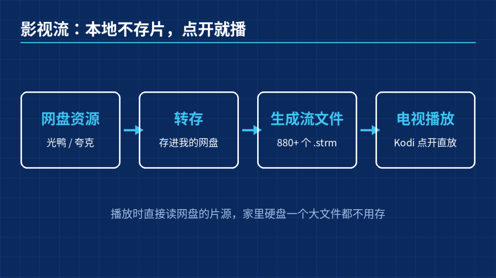
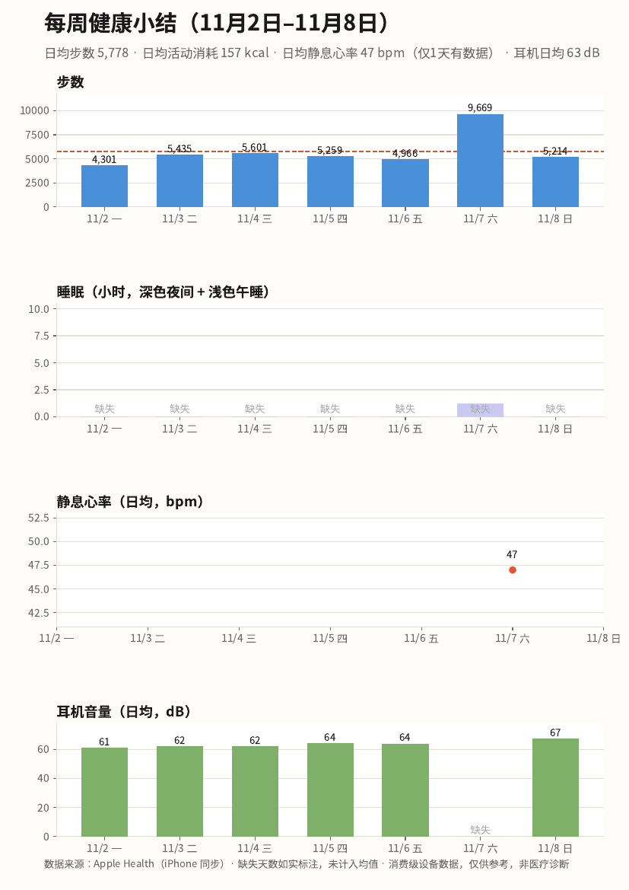

18 个项目全清单：把家里的重复活都变成了自动化
从 NAS、推送、影视、音乐，到每天的晨报、公交和公众号写作——18 个和 Muse 一起折腾的项目，一次讲清每个解决什么痛点、现在跑得怎么样。
这篇适合家里有 NAS、或者好奇「AI 到底能替人干多少活」的人。我这段时间用 Muse 一起折腾了 18 个项目，攒到今天，一次说清。每个项目只讲三件事：它是干什么的、解决了我什么麻烦、现在跑得怎么样。活是 Muse 动手干的，我负责想清楚要什么、最后验收；这套办法不挑工具，换个 AI 也能照搬。
音乐下载流水线：想听什么歌，我在聊天里说一声，它去搜、下载，再把缺的封面和歌词补齐，放进家里的音乐库。解决的是下歌要开软件、逐首点的麻烦。现在曲库 1186 首，这周刚把周杰伦的歌按热度补满 100 首。这个项目之前单独发过一篇。
Home Assistant 部署：家里的灯和空调各管各的，米家、小爱、手机里的「家庭」来回切。它在 NAS 上装了一个智能家居中枢，把米家 266 个设备全接进来，再挑常用的 11 项放进 iPhone 的家庭应用，一个入口全管了。
Tailscale 组网：两台 NAS 不在一个地方，以前想动哪台都得守在跟前。组网之后，我在外面也能像在家里一样直接连回去，它远程干活也不用我守着。这是地基项目，后面大半项目都靠它。
SmartStrm 影视流：想看的剧存在网盘里，以前得先下载到本地，硬盘再大也不够塞。它把网盘里的片子变成 880 多个「流文件」，电视上的播放器点开就直接播网盘里的片源，本地一个大文件都不存。

影视流的链路：网盘的片转存后生成流文件，电视点开直放
Bark 自建推送：手机上的提醒我用自建推送，图的是不经过别人的服务器。中间推送服务器所在的那台机器网络抖动，推送连着失败；它把服务搬到另一台 NAS，手机上一个设置没改，推送就恢复了。现在每天的提醒和任务完成通知都走它。
Cloudflare 全托管：我的个人网站、域名和内网穿透都挂在 Cloudflare 上，账号里攒了两把旧钥匙和一堆失效记录。它换上一把新钥匙统一接管，清掉 23 条没用的记录，三条穿透通道的状态，一页就能看清。
InstaBox 免费机节点：一台免费领的云端小机器，闲着也是闲着，拿来搭了个自用节点，平时休眠不花钱，用的时候再叫醒。免费的东西限制不少，闲置半小时就自动睡，但当个临时工作台够用了。（目前挂了，instabox不允许）
老笔记本跑大模型：一台 2013 年的老笔记本，我想让它在本地跑个 AI 模型。它的显卡太老用不上，只能靠 CPU 硬算，还专门给它做了个「只用 CPU」的模型版本才跑起来。速度不快，胜在断网也能用。（没多大用）
飞牛便签 MCP：家里 NAS 上的便签应用自带一个「让 AI 直接读写」的接口，藏得很深。接通之后，我说一句「记一下」，内容就进便签；查以前记的东西，也不用再打开应用翻。前后一共 28 个工具能直接使唤。
PicoClaw 微信助手：微信里转来的资料，我想让它自动整理进我的笔记软件。入口是个微信机器人，后面接 AI 理解内容再同步过去。中间试过拿本地小模型当大脑，实在太慢、消息老超时，换成云端模型才跑顺。
每日晨报 PDF：每天早上想知道天气、邮件和新闻，以前要挨个打开好几个应用。现在每天 9 点整，一份带手绘风漫画的晨报自动发到手机：天气、日程、重要邮件、科技新闻，排好版等我看。
每天 9 点自动送到的晨报，第一页长这样
健康数据周报：手表天天记步数、睡眠和心率，数据躺在手机里从来不看。现在每周一自动汇总成一页图表发到邮箱，这周走了多少、睡得怎么样，一眼看完；缺数据的日子会老实标「缺失」，不编。

每周一的健康周报：一页看完一周的步数、睡眠和心率
通勤公交盯梢：上班坐的 BRT，错过一班就要多等十分钟。它每天早晚按我出门的时间点，盯着 7 条线路的到站时间，把能赶上的班次提前发我；下班再帮我盯回程那条线。
AI 短剧流水线：想把仙侠小说的片段做成短视频，纯手工剪一条要大半天。现在脚本、配音、画面、字幕、成片一条龙，《戮默》《荒天帝》等四部都做完了。规矩也立下了：同一个镜头不许重复凑时长，缺镜头就补拍新的。
《荒天帝》成片画面：脚本、配音、画面、字幕全是流水线出的
公众号助手：就是这个号的生产工具。帮我干活的 Muse 跑在海外，写稿排版都行，唯独传草稿会被微信的白名单拦住，所以把「上传」这一步搬回家里 NAS，做成了人人能装的飞牛应用：写稿、配图、排版、传草稿全包，已经开源（github.com/wanycun/gzhuploader）。这个号最近的文章，基本都是它在接管。
公众号助手的仪表盘：文章包、草稿箱、配置状态一眼看清
M301H 电视盒刷机：一台吃灰的老电视盒，短接主板上的两个点刷进新系统，装上播放器，接上前面说的影视流，成了客厅的播放终端。WiFi 还有点小毛病，插网线用没问题。
EC6108V9U 定版：另一台电信盒子，刷机包分两个版本，刷错就变砖。还在等确认这台机器的版本信息，没确认之前不动手——难得的一个「未完工」，先挂着。（读者咨询的问题）
Kodi 跳片头翻车：电视剧片头片尾太长，我想让播放器自动跳过。857 个标记文件全做好了，才发现那个老版本播放器对网络播放的片子根本不看标记。白忙一场，结案放弃。翻车也记下来，免得以后再走一遍。
这 18 个项目，真正花钱的几乎没有：机器是旧的、软件大多开源、服务用免费档。我只要做两件：想清楚要什么，和最后验收。剩下的搜索、配置、排错、写代码，都是 Muse 干。也有翻车和半途而废的，就在上面写着，不藏着。这个号还是老规矩：不评测，只把东西做出来，做一个，记一个。
我是 CHUN，我不评测，我只把东西做出来
如文章对您有帮助，欢迎点赞、在看、转发三连
您的支持是我的动力
THANKS FOR READING